長期トレンド
JKMとJEPXシステムプライスの推移グラフ
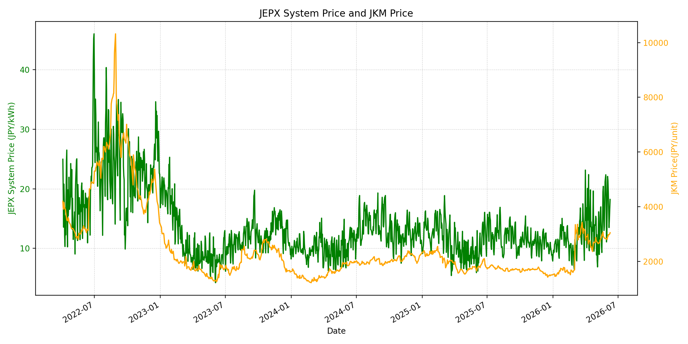
WTIの推移グラフ
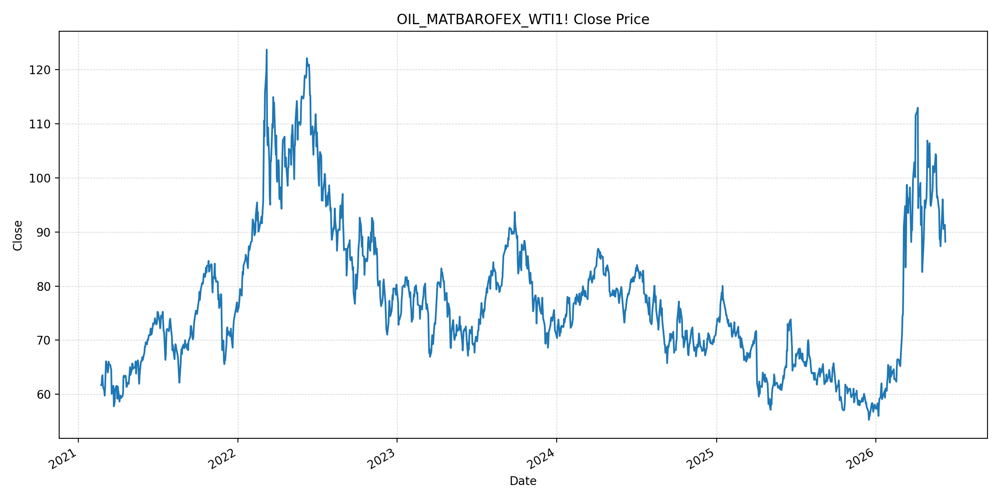
JEPXエリアプライスグラフ（直近一年分）
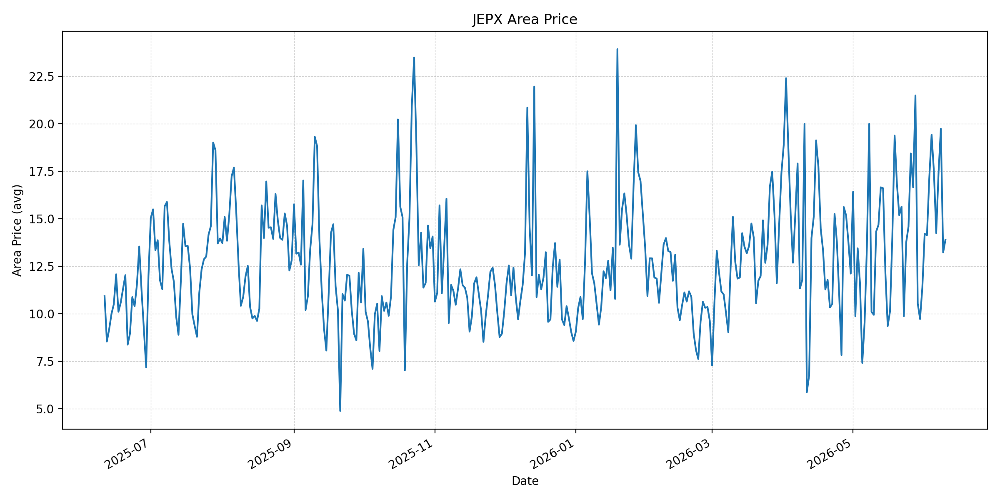
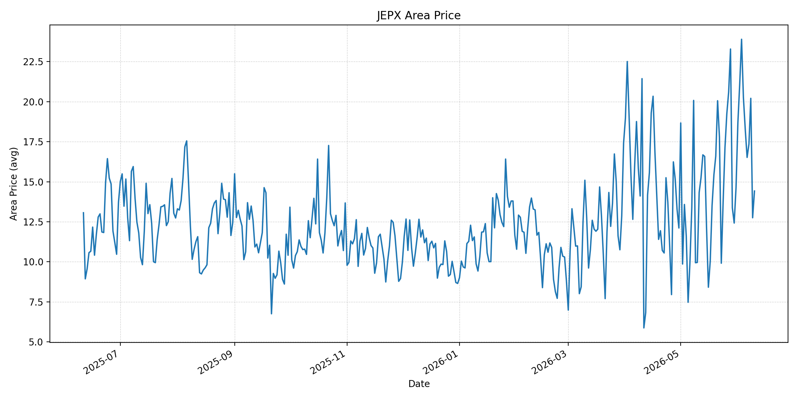
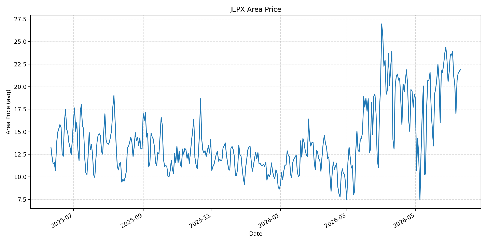
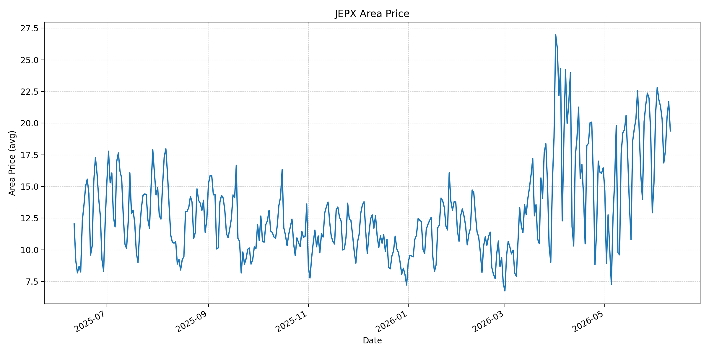
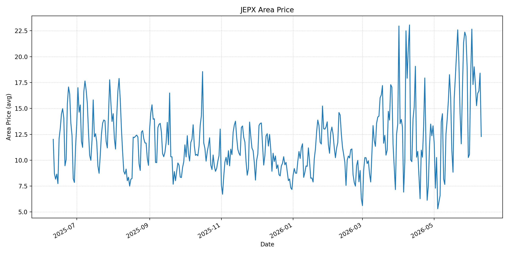
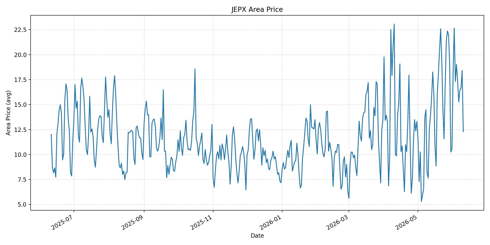
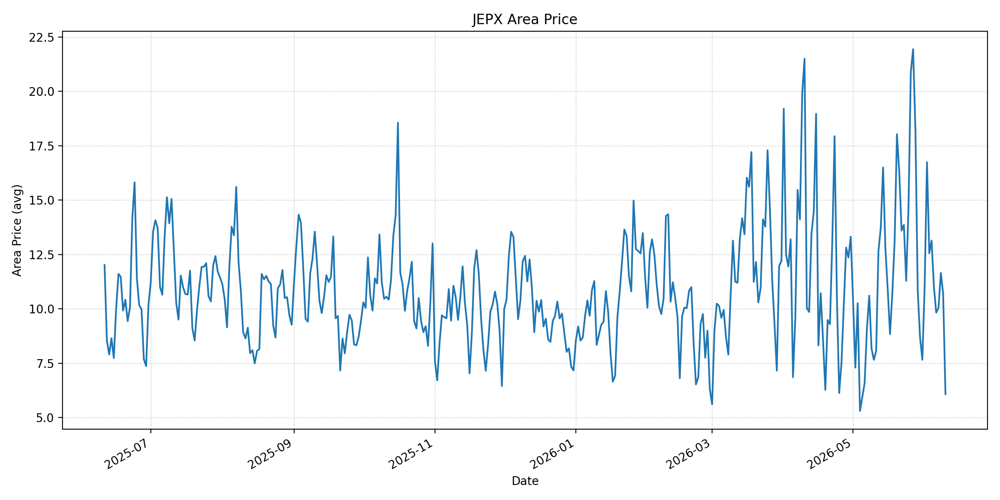
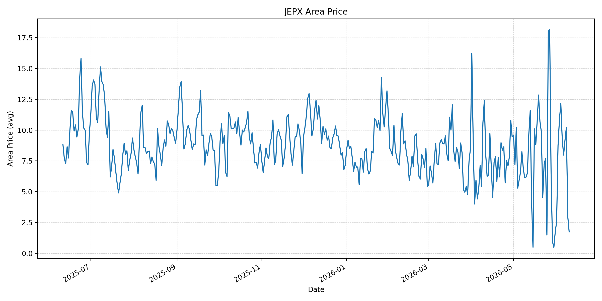
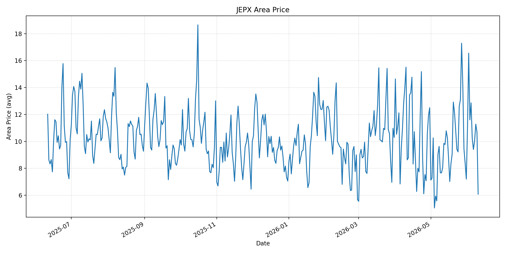
短期トレンド
JKMとJEPXシステムプライスの推移グラフ
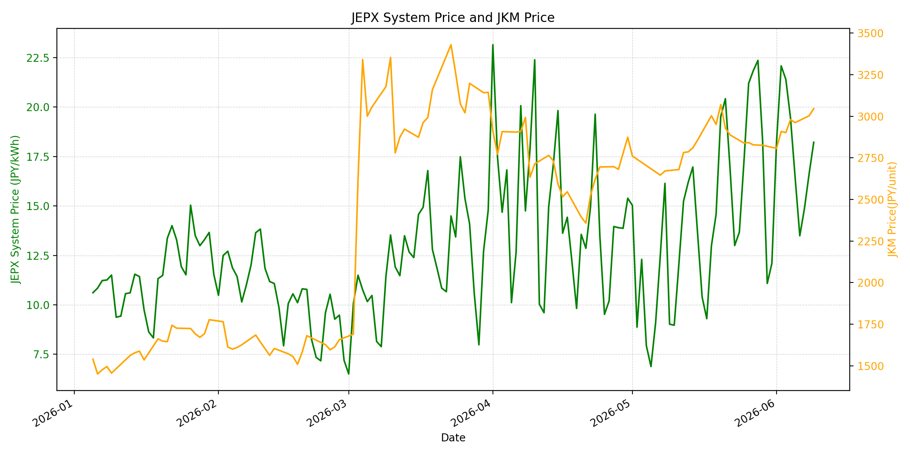
WTIの推移グラフ
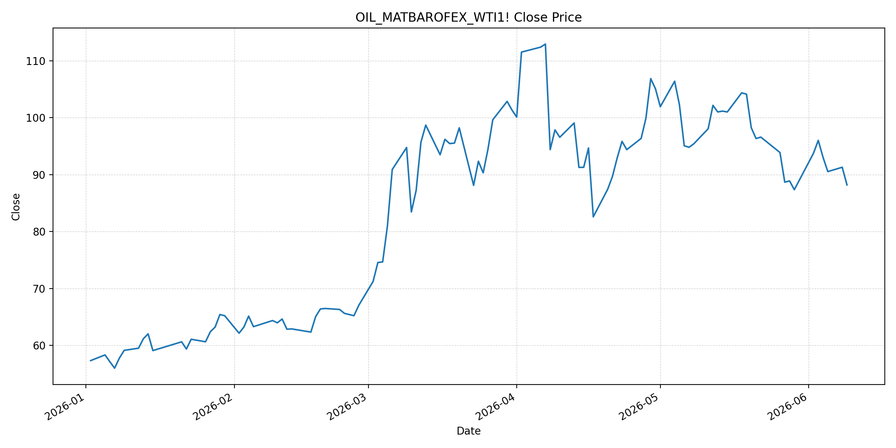
JEPXシステムプライス
JEPXは受渡日ベースの最新非空値で評価しています。最新値は 2026-06-10 分です。先週終値は 2026-06-03 時点の直近値、先月終値は 2026-05-31 時点の直近値で評価しています。
| エリア | 当日価格 | 前日価格 | 前日比（％） | 先週終値 | 先週比（％） | 先月終値 | 先月比（％） | 過去最高値 | 最高値比（％） |
|---|---|---|---|---|---|---|---|---|---|
| システム | 14.68 | 18.22 | -19.43 | 21.40 | -31.40 | 12.10 | 21.32 | 64.06 | -77.09 |
| 北海道 | 13.89 | 13.22 | 5.07 | 17.13 | -18.91 | 11.38 | 22.06 | 73.92 | -81.21 |
| 東北 | 14.42 | 12.75 | 13.10 | 23.90 | -39.67 | 14.64 | -1.50 | 84.92 | -83.02 |
| 東京 | 21.89 | 21.69 | 0.92 | 23.90 | -8.41 | 21.65 | 1.11 | 86.13 | -74.58 |
| 中部 | 19.38 | 21.69 | -10.65 | 21.84 | -11.26 | 15.25 | 27.08 | 52.06 | -62.78 |
| 北陸 | 12.29 | 18.41 | -33.24 | 17.31 | -29.00 | 10.56 | 16.38 | 46.48 | -73.56 |
| 関西 | 12.29 | 18.41 | -33.24 | 17.31 | -29.00 | 10.56 | 16.38 | 46.48 | -73.56 |
| 中国 | 6.08 | 10.69 | -43.12 | 12.56 | -51.59 | 7.66 | -20.63 | 46.48 | -86.92 |
| 四国 | 1.74 | 2.98 | -41.61 | 10.83 | -83.93 | 1.74 | 0.00 | 46.48 | -96.26 |
| 九州 | 6.08 | 10.69 | -43.12 | 11.60 | -47.59 | 7.20 | -15.56 | 40.54 | -85.00 |
LNG先物価格
最新値は 2026-06-09 の LNG(close) です。先週終値は 2026-06-02 時点の直近値、先月終値は 2026-05-29 時点の直近値で評価しています。
| 当日価格 | 前日価格 | 前日比（％） | 先週終値 | 先週比（％） | 先月終値 | 先月比（％） | 過去最高値 | 最高値比（％） |
|---|---|---|---|---|---|---|---|---|
| 3046.00 | 3003.00 | 1.43 | 2909.00 | 4.71 | 2826.00 | 7.78 | 10319.00 | -70.48 |
石油先物価格
最新値は 2026-06-09 の OIL(close) です。先週終値は 2026-06-02 時点の直近値、先月終値は 2026-05-29 時点の直近値で評価しています。
| 当日価格 | 前日価格 | 前日比（％） | 先週終値 | 先週比（％） | 先月終値 | 先月比（％） | 過去最高値 | 最高値比（％） |
|---|---|---|---|---|---|---|---|---|
| 88.20 | 91.30 | -3.40 | 93.76 | -5.93 | 87.36 | 0.96 | 123.70 | -28.70 |
ニュース
イラン情勢に関するニュース
- 2026年6月9日、APは、米軍がホルムズ海峡付近で墜落した陸軍ヘリをめぐり、イランに対する攻撃を実施したと報じました。米中央軍は比例的な対応と説明し、イラン側は反撃を示唆しており、4月停戦後の緊張は再び高まっています。 参照: AP, 2026-06-09
- 同記事は、ヘリがイランのドローンと衝突した可能性にも触れ、米イラン交渉では濃縮ウラン、制裁解除、凍結資産の扱いで隔たりが残ると整理しています。トランプ大統領は合意が近いと述べていますが、実務的な不確実性は大きいままです。 参照: AP, 2026-06-09
ホルムズ海峡経由の石油・LNGに関するニュース
- 2026年6月9日、Financial Timesは、米エネルギー長官がホルムズ海峡の船舶通航が「意味のある」水準で増えていると述べたことを受け、Brentが3%下落して91.45ドル、WTIが3.4%下落して88.20ドルで引けたと報じました。ただし、通航の完全正常化には数カ月を要するとの見方も示されています。 参照: Financial Times, 2026-06-09
- APは、Qeshm島で爆発が報じられたこと、ホルムズ海峡が戦争中に事実上閉鎖されてきた重要航路であることも伝えています。原油は通航改善観測で下げましたが、米軍攻撃とイランの反応は海上物流リスクを残しています。 参照: AP, 2026-06-09
ホルムズ海峡経由でない石油・LNGに関するニュース
- 過去24時間で、日本向けの非ホルムズ新規大型調達に関する強い追加報道は確認できませんでした。直近ではKplerが、日本の2026年LNG需要見通しを64.9百万トンへ0.6百万トン引き上げ、Q2からQ3に8から10カーゴの追加需要を見込むと分析しています。 参照: Kpler, 2026年5月
- JOGMECの2026年6月8日掲載の週次では、6月1日から5日の北東アジアJKMは前週末の18ドル前半から6月5日に18ドル後半へ上昇し、米イラン和平協議停止、豪州ストライキ、天候要因が上昇材料になったと整理されています。 参照: JOGMEC, 2026-06-08
日本国内のイラン戦争に関係するニュース
- 過去24時間で、JEPX制度や国内電力市場制度を直接変更する新規の強い発表は確認できませんでした。直近の国内対策として、経済産業省は2026年5月20日に、今夏は全エリアで最低限必要な予備率3%を確保できるため節電要請は実施しないと発表しています。 参照: 経済産業省, 2026-05-20
- 同発表では、国際情勢の変化、異常気象、発電所の休廃止、火力発電所の地域集中などにより、電力需給は予断を許さないとも説明されています。国内供給力の余力は確保されていても、燃料価格の上振れは卸市場へ波及し得ます。 参照: 経済産業省, 2026-05-20
インサイト
ニュース事項による日本の電力市場への影響（短期：数日〜1週間）
- JEPXシステムプライスは 14.68 円/kWhで前日比 -19.43% と大きく低下しました。中国 6.08、四国 1.74、九州 6.08 が下げを主導する一方、東京は 21.89 と高止まりしており、全国平均の低下だけでは東日本の需給を説明できません。
- OILは 88.20 と前日比 -3.40%、先週比 -5.93% です。FTが報じたホルムズ通航改善観測は短期の原油下押し材料ですが、APが報じた米軍攻撃とイランの反発姿勢を踏まえると、燃料リスクプレミアムは完全には剥落していません。
- LNGは 3046.00 と前日比 1.43%、先月比 7.78% です。JEPXが下がる日でもLNGが上昇しているため、数日から1週間ではスポット電力の低下を燃料環境改善と直結させず、東京の20円台維持とLNGヘッジ需要を優先して見る必要があります。
ニュース事項による日本の電力市場への影響（長期：1ヶ月〜半年）
- ホルムズ通航量が増えても完全正常化に時間を要する場合、LNGの先月比 7.78% 上昇は夏季以降の火力燃料費に残ります。Kplerの日本LNG需要上方修正とJOGMECのJKM上昇整理を合わせると、非ホルムズ調達だけで価格上振れを完全に吸収するのは難しいです。
- JEPXシステムは先週比 -31.40% ですが、先月比は 21.32% です。東京は先月比 1.11% と高値を維持し、中部も 19.38 と相対的に高いため、1ヶ月から半年では燃料価格とエリア別需給を分けて監視する必要があります。
- 経済産業省は今夏の節電要請を見送っていますが、国際情勢や火力発電所の地域集中をリスクとして明示しています。国内供給予備率が確保されても、ホルムズ正常化の実績、LNG在庫、東京・中部の価格粘着性が卸価格見通しの主要論点です。